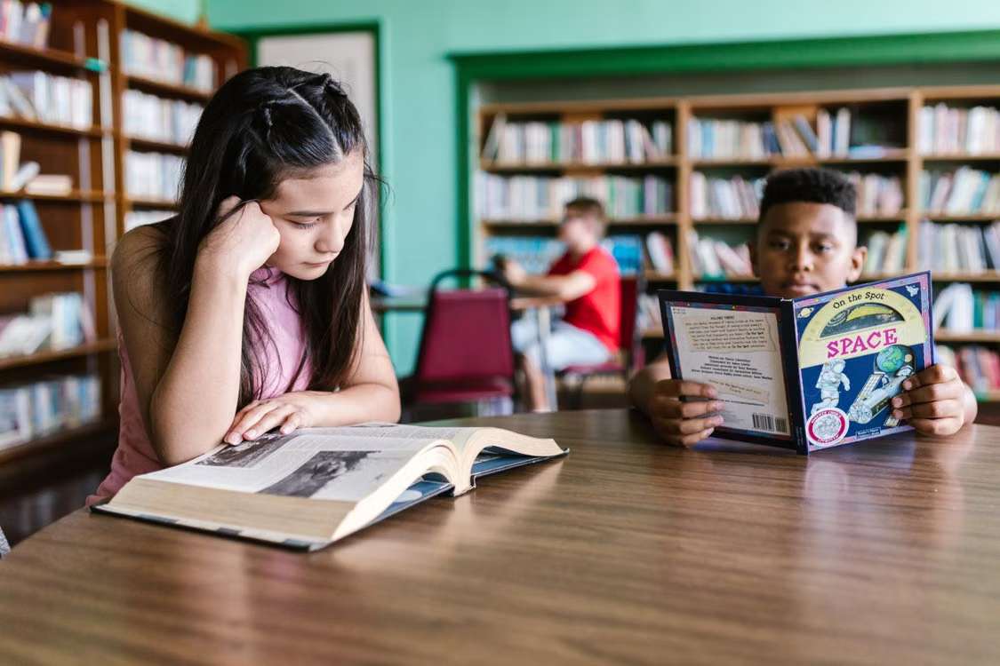
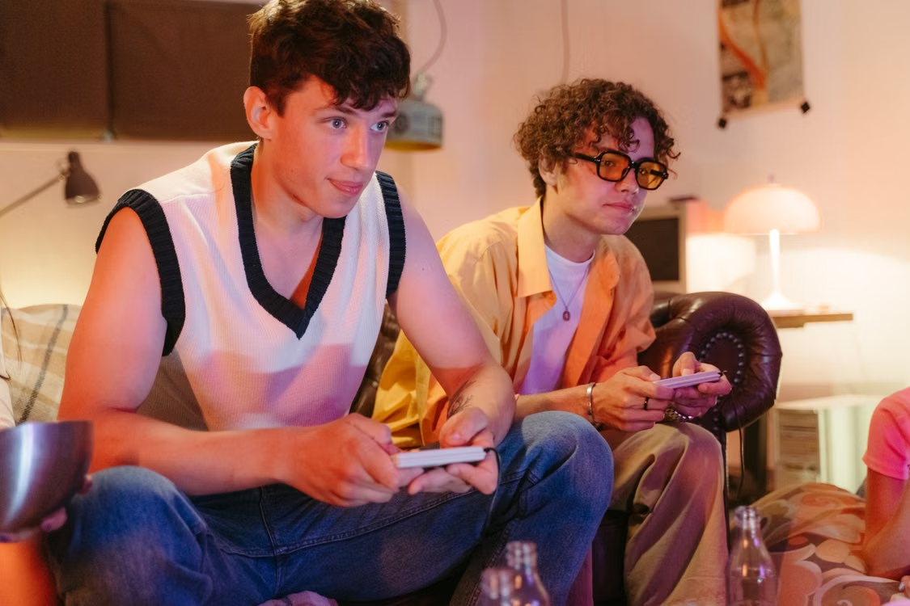

Escolha
Selecione um livro, quadrinho ou mangá disponível na nossa biblioteca.
Leitura + videogames
A Checkpoint Literário incentiva crianças e adolescentes a desenvolverem o hábito da leitura por meio de uma experiência que combina literatura, escrita e videogames.

Nosso método
A leitura vira parte de uma jornada divertida, com pequenas conquistas ao longo do caminho.
Selecione um livro, quadrinho ou mangá disponível na nossa biblioteca.
Leia um capítulo e registre com suas próprias palavras o que compreendeu.
Complete o checkpoint e aproveite seu período nas estações de videogame.
Aprender pode ser divertido
Utilizamos o interesse pelos videogames como uma ponte para aproximar crianças e adolescentes da literatura.
A leitura deixa de ser apresentada apenas como obrigação e passa a integrar uma experiência de descoberta, convivência e diversão.
Player 2 entrou na partida
Além das atividades de leitura, os participantes podem jogar juntos, compartilhar experiências e desenvolver habilidades de convivência e cooperação.
Veja nossas iniciativas
Fale com a gente
Quer participar, fazer uma doação ou saber mais sobre o projeto?